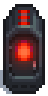
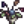

Heavy Furnace
Jump to navigation
Jump to search
| Heavy Furnace | |
 |
|
| It's more efficient than a regular furnace. Requires 25 pieces of ore and 3 coal per use. | |
| Information | |
| Source | Crafting |
| Sell Price | Cannot be sold |
| Crafting | |
| Recipe Source | |
| Ingredients | |
The Heavy Furnace is an improved version of the Furnace. It can be crafted after claiming Mining Mastery. It takes 25 ores (or 5 quartz or fire quartz) and 3 Coal to run.
Smelting
To smelt any ore, equip it and activate the furnace while there is Coal in inventory. Three units of Coal are required for each smelting operation, regardless of the material or duration. Each possible output stack size is equally likely, i.e. ores have a 50% chance of yielding 5 bars and a 50% chance of yielding 6 bars.[1]
When smelting bars, on average, 9% of the ore and 45% of the Coal is saved in comparison to normal Furnaces.
| Input | Output | Time to smelt | Sells For (Unit) | Sells For (Average total) |
|---|---|---|---|---|
| Bouquet (1) |  Wilted Bouquet (1) |
|||
References
- ↑ See Data\Machines.xnb in the game files. The output size is chosen using MinStack and MaxStack, which are not affected by any modifiers.
History
- 1.6: Introduced.